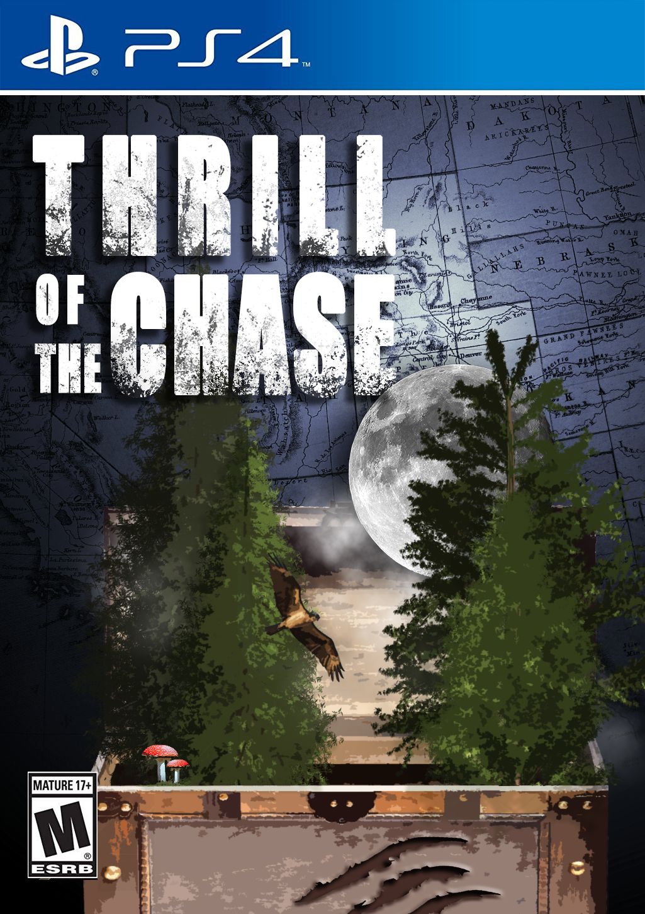
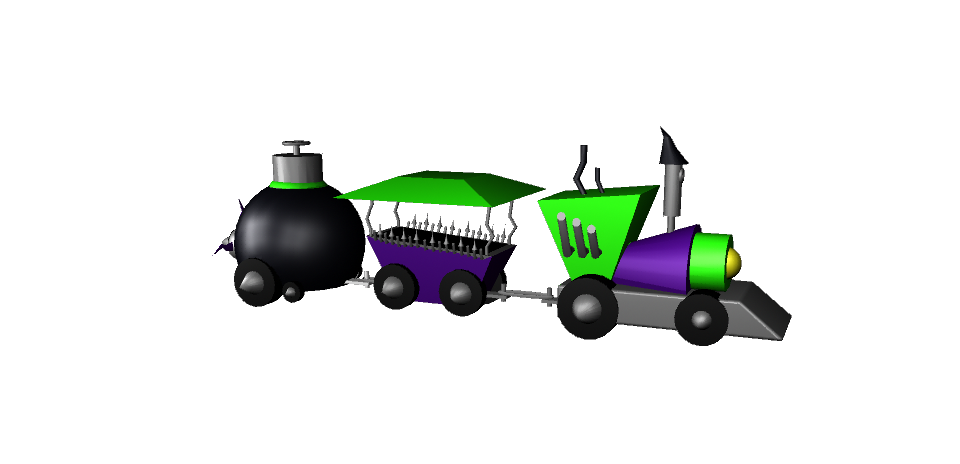
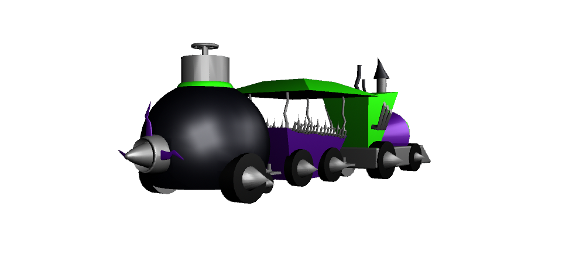
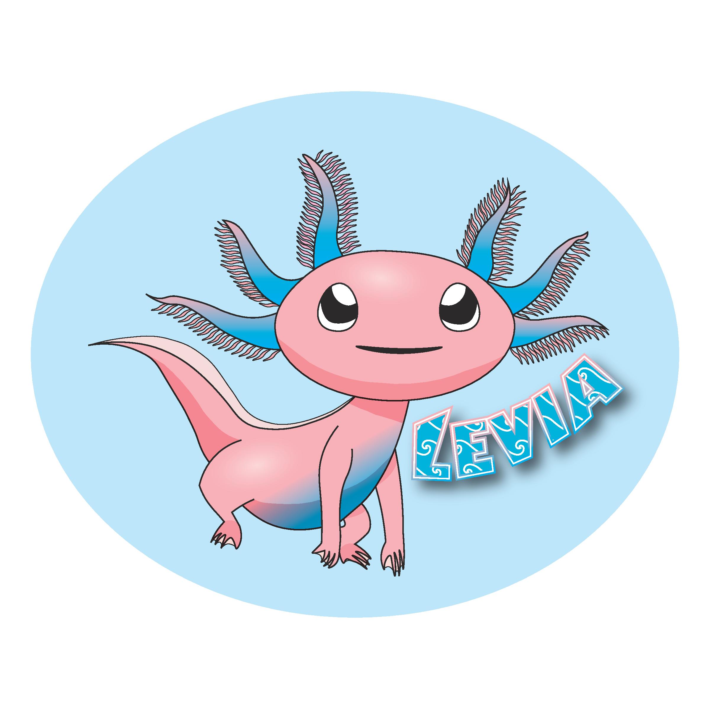

Lauren Ross
Bio
Lauren Ross is a student at Seminole State College of Florida working towards an associate degree. She is currently studying Digital Media, and taking courses in Fundamentals of Interactive Design, 3D Modeling and Animation, and Social Media Tools.
Lauren started at Seminole State College through her high school dual enrollment program and plans to complete her AA in Spring of 2020. Her goal is to then attend Ringling College of Art and Design in Sarasota Florida, where she will get her Bachelors degree in Animation.
Lauren is lover of animals, previously volunteering at the Central Florida Zoo and with pets at home ranging from house cats to sugar gliders. She is also an art lover, a hobby which is enhanced through her current studies and will hopefully extend into her career.
Skills
- HTML
- CSS
- Graphic Design
- 3D Modeling
- DSLR Photography
- Image Editing
- Social Media and Marketing
- Customer Service and Communication
- Data-entry
- Spreadsheet Manipulation
- Presentation Development
Software/Hardware
- Photoshop
- Illustrator
- InDesign
- Maya
- Atom
- Microsoft Office 365
- Google G Suite
Social Media
Github
Reddit
Twitter
Youtube
Work Samples
Photoshop


"Dreams" (left) is a surrealist composition created in Photoshop. "Invasive" (right) is a collage created in Photoshop.


"Thrill of the Chase" (left) is a design concept for a video game created in Photoshop. "Red-Eyed Rainforest" (right) is a digital painting created in Photoshop.
Maya


The 3D "Toy Train" (above) concept was modeled in Maya.
Illustrator

"Levia" (above) is an original Pokémon character design created in Illustrator.